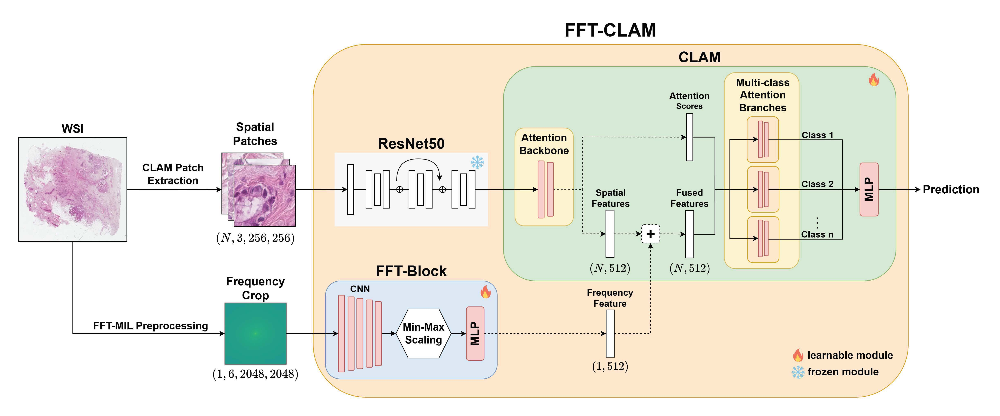
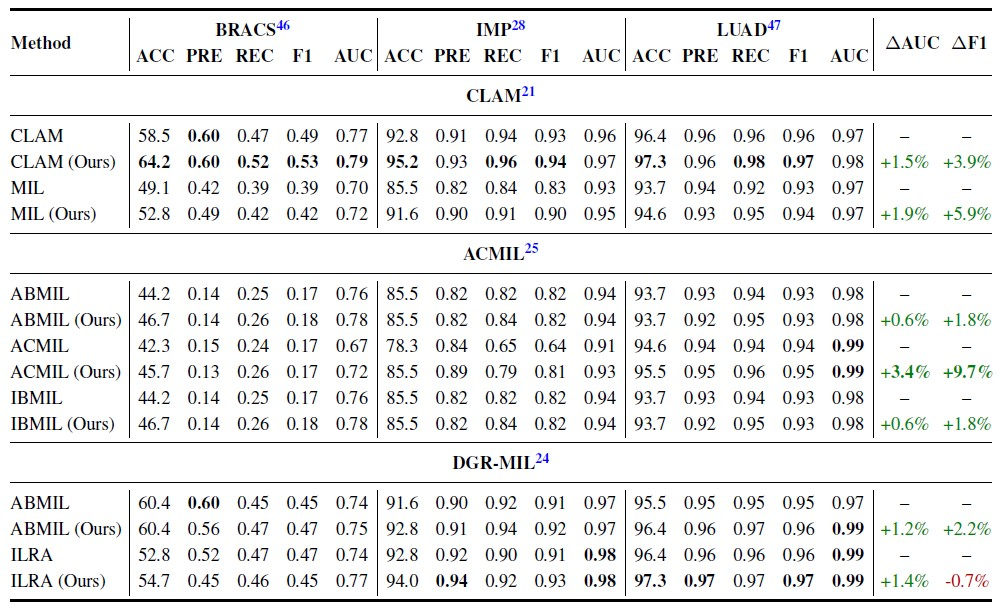
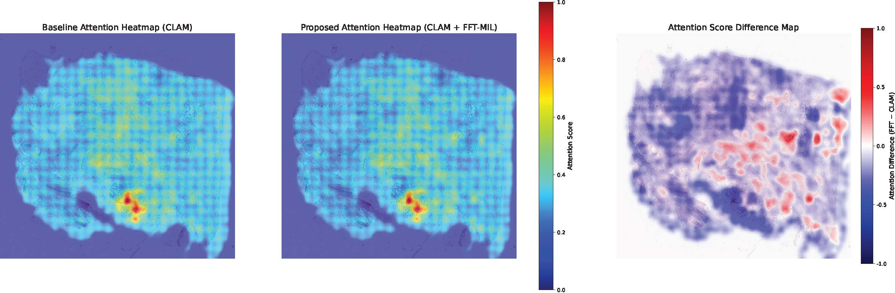

Abstract
Whole Slide Image (WSI) classification relies on
Multiple Instance Learning (MIL) with spatial patch features, yet existing methods
struggle to capture global dependencies due to the immense size of WSIs and the local nature of
patch embeddings. This limitation hinders the modeling of coarse structures essential for robust
diagnostic prediction.
We propose Fourier Transform Multiple Instance Learning (FFT-MIL),
a framework that augments MIL with a frequency-domain branch to provide compact global context.
Low-frequency crops are extracted from WSIs via the Fast Fourier Transform and processed through a
modular FFT-Block composed of convolutional layers and
Min-Max normalization to mitigate the high variance of frequency data. The learned global frequency
feature is fused with spatial patch features through lightweight integration strategies, enabling
compatibility with diverse MIL architectures.
FFT-MIL was evaluated across six state-of-the-art MIL methods on three public datasets
(BRACS, LUAD, and IMP). Integration of the FFT-Block
improved macro F1 scores by an average of 3.51% and AUC by 1.51%,
demonstrating consistent gains across architectures and datasets. These results establish
frequency-domain learning as an effective and efficient mechanism for capturing global dependencies
in WSI classification, complementing spatial features and advancing the scalability and accuracy of
MIL-based computational pathology.
Architecture
Preprocessing

Results
Attention Heatmap
BibTeX
@misc{bilic2025fouriertransformmultipleinstance,
title={Fourier Transform Multiple Instance Learning for Whole Slide Image Classification},
author={Anthony Bilic and Guangyu Sun and Ming Li and Md Sanzid Bin Hossain and Yu Tian and Wei Zhang and Laura Brattain and Dexter Hadley and Chen Chen},
year={2025},
eprint={2510.15138},
archivePrefix={arXiv},
primaryClass={cs.CV},
url={https://arxiv.org/abs/2510.15138}
}